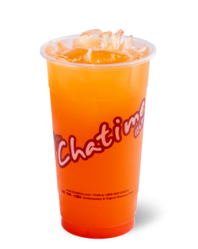
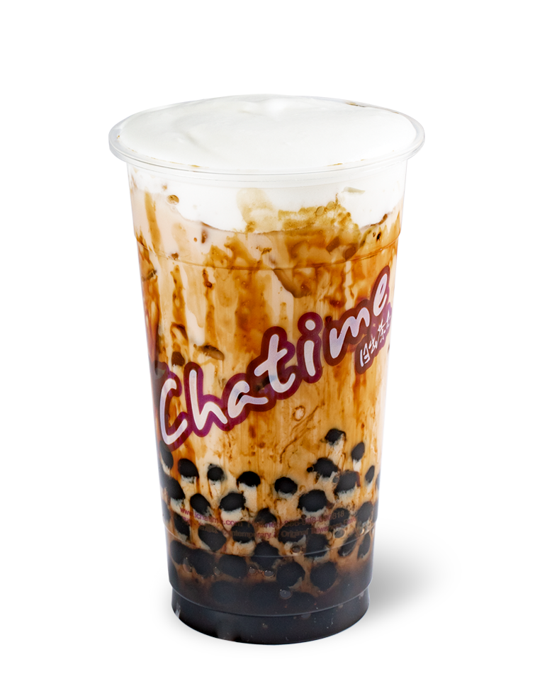
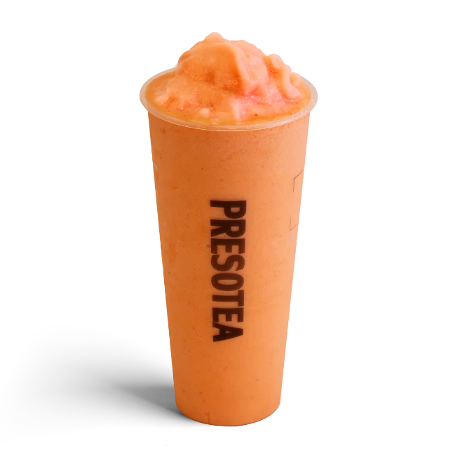
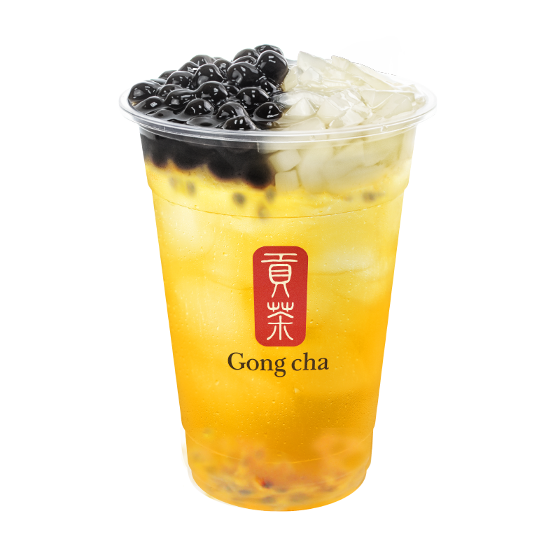
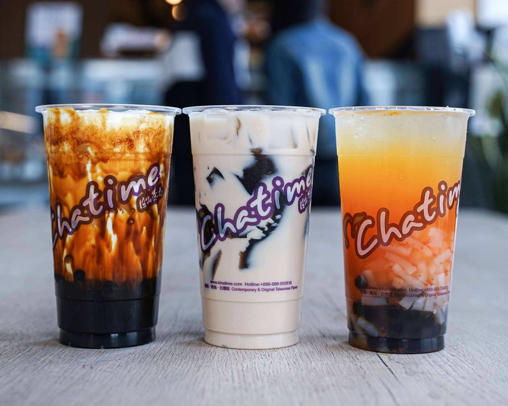
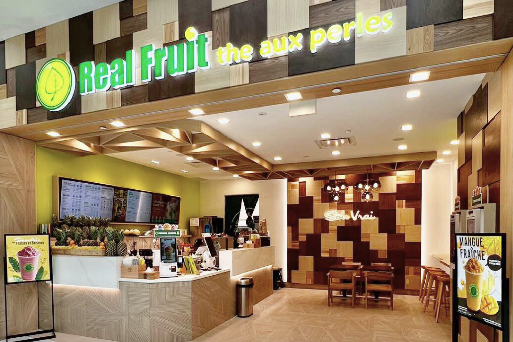
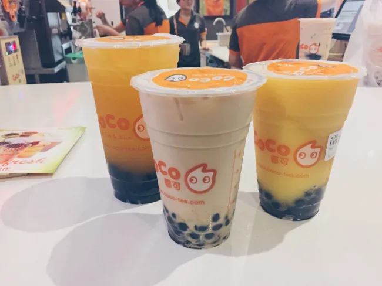
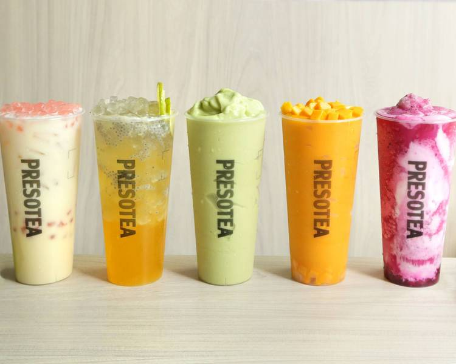

bubble tea
i have opinions on bubble tea. you are going to hear them now.




i suppose i should first explain what bubble tea is in case you are my brother and previously thought it was tea with carbonation. the key characteristic of bubble tea is that it contains chewy tapioca pearls. no, you do not choke on them. unless you are stupid. most bubble tea drinks have a base of either milk tea or green tea but you can get stuff like smoothies and slushes at bubble tea places as well. there's generally a whole selection of toppings to choose from aside from just the standard tapioca pearls. i once went to a 'make your own bubble tea' place where you could throw in as many toppings as you like. i did exactly that, and that day i learned that things that are good individually can in fact taste bad when you dump them all in a cup with no restraint.
chains
these are some of the most common bubble tea chains in ottawa that i feel qualified to talk about.
chatime
somerset, merivale, carleton u
ever since chatime opened at carleton it's been getting more of my money than any other bubble tea place. i really like their mango grapefruit green tea but they don't even seem to sell that at the carleton location. overall they have a good selection of fruit teas. my grift with them is that a 'regular' is pathetically small in comparison to a 'large' making it pretty much obvious to go with the larger size as it's a better deal. chatime was once out of green tea when i went and this is concerning considering it makes up about half their menu.


real fruit
they are in every mall.
real fruit bubble tea makes their money off of convenience. i wholeheartedly believe you cannot be more than 5km from a real fruit bubble tea in this city. every mall, even the miserable old people ones like billings bridge and carlingwood, you bet it's got a real fruit in it. real fruit has a small-medium-large drink sizing system which is somehow rare. they also generally always have kiosks you can order at without having to talk to an actual person, an instant win. some of their fruit teas are genuinely horrific though. if your friend/coworker/neighbour who you are forced to be nice to but secretly despise ever asks you for a bubble tea recommendation, tell them to go to real fruit bubble tea and order a passionfruit green tea. they do have a fun selection of toppings including various flavours of jellies. i personally like the strawberry popping boba.
coco
hunt club, merivale, bank
coco is one of the more reasonably priced bubble tea places which we NEED MORE OF. it spawned an inside joke with my friend that all seagulls are called coco so it's kind of important in that aspect. the thing is i go to coco and i don't know what to order. half their menu is something called yakult. i don't know what yakult is. google describes it as fermented skim milk and that doesn't sound particularly appealing. i have walked into the same coco on two separate occasions, one where k-pop was playing, and one where bauhaus was playing. i admire their staff's duality. also i like their mascot. he's so silly. no clue what he's supposed to be.


presotea
st laurent mall, rideau st, westboro, barrhaven, orleans
presotea has so many options in both drinks and toppings. the price definitely reflects that though. i think they're the most expensive chain as far as i can remember. presotea has managed to cover essentially all the areas of ottawa with its locations (except for kanata but they don't matter) and that's impressive in it's own way. what i don't like is the chaos of their menu. they have a predetermined top 10 teas that they push, a couple of other specials, and that's it. they won't show you all the other drinks they sell, including the 'yogurt tea' that i fear most.